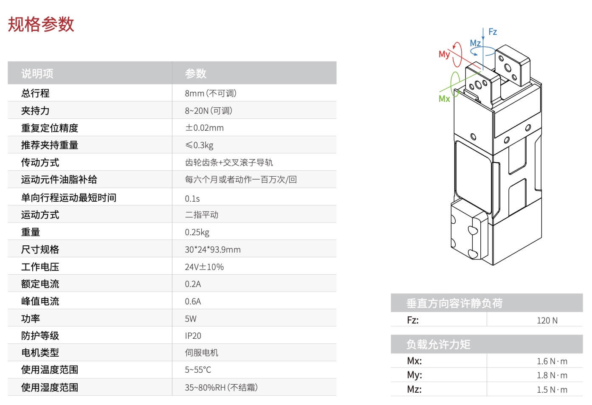
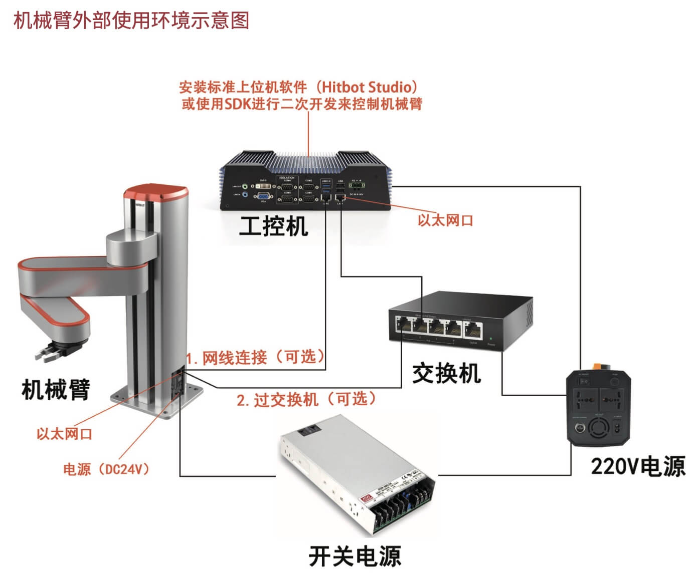

机械臂选型
更新 24-11-04 | 发布 24-10-24
整体--采用什么抓取装置
通过网上搜索，以及咨询大模型，得到如下信息。
[咨询大模型的提示词] 要结合人工智能技术，分拣底栖动物，可以采用什么样的抓取装置做分拣。比如机械臂、吸盘，或其他什么抓取装置。
一、高精度机械臂
特点：机械臂具有高精度、高灵活性和可编程性，能够准确抓取和移动底栖动物。通过搭载不同的末端执行器，如夹爪、吸盘等，可以适应不同形状和大小的底栖动物。
应用：机械臂可以在分拣系统中自动识别并定位底栖动物，然后抓取并将其放置到指定的位置。通过与人工智能技术的结合，机械臂可以实现自主学习和优化抓取策略，提高分拣效率和准确性。
二、吸盘式抓取装置
特点：吸盘式抓取装置利用负压原理吸附底栖动物，具有无损抓取、适应性强等优点。它可以根据不同动物的大小和形状调整吸附力，确保稳定抓取。
应用：在分拣过程中，吸盘式抓取装置可以快速吸附并移动底栖动物，将其放置到相应的分类区域。通过与图像识别和定位技术的结合，吸盘式抓取装置可以实现精准抓取，提高分拣速度。
三、其他抓取装置
柔性抓手：类似于文章3中提到的柔软抓手，能够适应不同形状和质地的底栖动物，通过变形包裹住动物进行抓取。这种抓手对动物伤害小，适合分拣易受损的底栖动物。
电磁式抓取装置：对于具有磁性的底栖动物，可以采用电磁式抓取装置进行分拣。通过控制电磁铁的通断电，实现动物的吸附和释放。
综上所述，结合人工智能技术分拣底栖动物时，可以采用高精度机械臂、吸盘式抓取装置以及其他如柔性抓手或电磁式抓取装置等。这些抓取装置各具特点，可以根据实际需求选择适合的装置进行分拣工作。同时，通过与人工智能技术的深度融合，这些抓取装置可以实现更高效、准确的分拣效果。
整体--机械臂推荐型号
从网上搜索，以及咨询大模型，得到以下信息。
[咨询大模型的提示词] 推荐机械臂，用于分拣底栖动物的寡毛类，推荐10个型号和相应的官网网址，高精度的，生物实验室使用，有API可调用控制的，2万元到5万元左右，国产品牌。毫米级定位精度，最大负载100克
型号：AM100
官网网址：www.aitech-robotics.com （示例网址，具体请查询实际品牌官网）
特点：高精度机械臂，专为实验室精密操作设计，毫米级定位精度，最大负载100克，提供API接口方便集成控制。
型号：BM120
官网网址：www.bio-mech.cn （示例网址，具体请查询实际品牌官网）
特点：生物实验室专用机械臂，具备高精度和稳定性，最大负载满足要求，提供完善的API文档支持。
型号：PM150
官网网址：www.precision-manipulator.com
特点：精密操作机械臂，价格适中，定位精度达到毫米级，最大负载能力100克，可通过API实现远程控制。
型号：LM200
官网网址：www.lab-manipulator.cn
特点：实验室用轻型机械臂，操作灵活，精度高，最大负载适合您的需求，支持API调用控制。
型号：SM250
官网网址：www.smart-manipulator.com
特点：智能型高精度机械臂，专为科研领域打造，满足毫米级定位精度，最大负载100克，提供API接口便于二次开发。
型号：EM300
官网网址：www.easy-manipulator.cn
特点：易于操作的高精度机械臂，价格合理，定位准确，最大负载符合您的要求，支持通过API进行控制。
型号：DM350
官网网址：www.delicate-manipulator.com
特点：精细操作机械臂，适合生物实验室使用，具备高精度和稳定性，最大负载100克，可通过API进行集成控制。
型号：CM400
官网网址：www.compact-manipulator.cn
特点：紧凑型高精度机械臂，占用空间小，适合桌面使用，定位精度毫米级，提供API支持方便控制。
型号：GM450
官网网址：www.graceful-manipulator.com
特点：优雅设计的高精度机械臂，操作流畅，精度高，最大负载满足您的需求，支持API调用控制功能。
型号：XM500
官网网址：www.xpert-manipulator.com
特点：专家级高精度机械臂，性能卓越，定位准确至毫米级，最大负载100克，可通过API实现精准控制。
机械臂--慧灵科技
慧灵科技：慧灵科技（江苏）有限公司是一家专注于机器人技术的公司，其小型六轴机械臂可能适用于分拣寡毛类底栖动物的任务。这种机械臂具有高精度、高灵活性和适当的负载能力，可以满足分拣任务的要求。
慧灵科技推荐：
- 夹蚯蚓的话，我建议您这个机械臂1832+8S 电动夹爪。
- 报价约 2 万左右。
- 总部昆山。
机械臂和夹爪示意图如下：
 小结：
1、夹爪力量可调节，但不是可编程的。通过夹爪上的旋钮可调节夹持力，有4档可调：8N（牛顿）、12N、16N、20N。
2、机械臂可使用 SDK 进行二次开发来控制机械臂。
机械臂XXX
需要调研以下主要信息：
- 机械臂运动范围。不是很大的那种，1-2米就差不多了。
- 机械臂的抓取力量。应该几百克左右就够了。能抓很重的东西，且定位精度很高，则可能很贵。
- 机械臂的夹爪。可以夹取寡毛类（说蚯蚓可能方便对方理解）、水生昆虫，以及贝壳类（应该问题不大）。夹爪可能要多个，不同夹爪用于抓不同的底栖动物。
- 重复定位精度。应该在0.02mm左右。就是机械臂运动到同一个地方，运动100次，每次几乎都一样。
- 夹爪的力量可调。至少有装置（比如旋钮）可调节夹爪的力量，最好可以通过 API 接口控制。
- 大致价位多少。应该几万左右。太贵或太便宜的，应该不是目标对象。
- 怎么通过程序控制和调用。有没有提供API或SDK，用于控制机械臂运动，以及夹爪夹取松开。需要拿到API或SDK文档，以及API或SDK的调用样例（可能文档中已包含）。
- 找2~3家，靠谱可行的。
怎么找？
- 通过网上搜索，或咨询ChatGPT等类似应用（比如文心一样）。
- 然后按图索骥，一个一个看，找到2~3个。
机械臂硬件相关简介
机械臂底层驱动简介和安装
为了方便控制，机械臂扩展板（就是和华为开发者套件通过40针排线连接的那块板）的底层软件是单独开发的，并且提供接口调用，控制包括总线舵机、PWM舵机、RGB灯。相关的底层驱动源码已经封装成python库，出厂镜像已经安装好，如果想移植到自己的系统，可以在程序源码汇总文件夹里找到Dofbot.zip压缩包。执行 unzip Dofbot.zip 解压压缩包：需要将压缩包复制到docker内解压，由于基础控制并没有涉及ROS，用户在宿主机安装也是可以的。
安装python驱动库。
执行命令 cd Dofbot/0.py_install && sudo python3 setup.py install
输入用户密码后（注：sudo命令要求输入用户的密码）按回车确认，看到安装提示 Arm_Lib=x.x.x 版本号则表示安装成功。
上述信息包含在第1个接口“1.控制RGB灯”中，更多详情可参考：1.控制RGB灯https://www.yahboom.com/build.html?id=9961&cid=606。
注：当前下载的源程序中是Dofbot.rar而非 Dofbot.zip。在 macOS 上同步以下步骤上传到开发者套件上：
- 在macOS中使用第三方软件解压缩，比如到 Dofbot0718目录中；
-
再在terminal终端中执行命令
tar -zcvf Dofbot0718.tar.gz Dofbot0718重新压缩打包。（z：用gzip压缩；c：打包；v：显示信息；f：指定打包后生成的文件。Dofbot0718.tar.gz是指定的打包生成的文件，Dofbot0718是要打包的目录） -
在macOS的 Terminal
终端上执行命令
scp Dofbot0718.tar.gz root@192.168.31.200:/root/rrta，将打包文件 Dofbot0718.tar.gz 上传到开发者套件 root 用户的 /root/ttra（ttra是自行创建的目录）目录下。后续执行 setup.py 安装后运行样例程序，使用 Arm_Lib 库要求有root权限（注：通常这是不合理的，今后再研究原因），因此使用root用户（而不是开发者套件上的其他普通用户）做测试。
用root用户登录华为开发者套件，解包 Dofbot0718.tar.gz，并执行 setup.py 安装。如下：
在本地 Terminal 中执行以下命令登录华为开发者套件：
~$ ssh root@192.168.31.200在开发者套件上执行以下命令：
root@davinci-mini:~# cd ttra
root@davinci-mini:~/ttra# tar -zxvf Dofbot0718.tar.gz #x表示解包
root@davinci-mini:~/ttra# cd Dofbot0718/0.py_install
root@davinci-mini:~/ttra/Dofbot0718/0.py_install# sudo python3 setup.py instal
执行命令后显示如下。今后再看看是否要解决 warning。参考上述描述，应该算是安装成功了，因为显示了 Arm-Lib==0.0.5。
root@davinci-mini:~/ttra/Dofbot0718/0.py_install# sudo python3 setup.py install
running install
/usr/lib/python3/dist-packages/setuptools/command/install.py:34: SetuptoolsDeprecationWarning:setup.py install is deprecated. Use build and pip and other standards-based tools.
warnings.warn(
/usr/lib/python3/dist-packages/setuptools/command/easy_install.py:158:EasyInstallDeprecationWarning: easy_install command is deprecated. Use build and pip and otherstandards-based tools.
warnings.warn(
running bdist_egg
running egg_info
creating Arm_Lib.egg-info
writing Arm_Lib.egg-info/PKG-INFO
writing dependency_links to Arm_Lib.egg-info/dependency_links.txt
writing top-level names to Arm_Lib.egg-info/top_level.txt
writing manifest file 'Arm_Lib.egg-info/SOURCES.txt'
reading manifest file 'Arm_Lib.egg-info/SOURCES.txt'
writing manifest file 'Arm_Lib.egg-info/SOURCES.txt'
installing library code to build/bdist.linux-aarch64/egg
running install_lib
running build_py
creating build
creating build/lib
creating build/lib/Arm_Lib
copying Arm_Lib/Arm_Lib.py -> build/lib/Arm_Lib
copying Arm_Lib/__init__.py -> build/lib/Arm_Lib
creating build/bdist.linux-aarch64
creating build/bdist.linux-aarch64/egg
creating build/bdist.linux-aarch64/egg/Arm_Lib
copying build/lib/Arm_Lib/Arm_Lib.py -> build/bdist.linux-aarch64/egg/Arm_Lib
copying build/lib/Arm_Lib/__init__.py -> build/bdist.linux-aarch64/egg/Arm_Lib
byte-compiling build/bdist.linux-aarch64/egg/Arm_Lib/Arm_Lib.py to Arm_Lib.cpython-310.pyc
byte-compiling build/bdist.linux-aarch64/egg/Arm_Lib/__init__.py to __init__.cpython-310.pyc
creating build/bdist.linux-aarch64/egg/EGG-INFO
copying Arm_Lib.egg-info/PKG-INFO -> build/bdist.linux-aarch64/egg/EGG-INFO
copying Arm_Lib.egg-info/SOURCES.txt -> build/bdist.linux-aarch64/egg/EGG-INFO
copying Arm_Lib.egg-info/dependency_links.txt -> build/bdist.linux-aarch64/egg/EGG-INFO
copying Arm_Lib.egg-info/top_level.txt -> build/bdist.linux-aarch64/egg/EGG-INFO
zip_safe flag not set; analyzing archive contents...
creating dist
creating 'dist/Arm_Lib-0.0.5-py3.10.egg' and adding 'build/bdist.linux-aarch64/egg' to it
removing 'build/bdist.linux-aarch64/egg' (and everything under it)
Processing Arm_Lib-0.0.5-py3.10.egg
Removing /usr/local/lib/python3.10/dist-packages/Arm_Lib-0.0.5-py3.10.egg
Copying Arm_Lib-0.0.5-py3.10.egg to /usr/local/lib/python3.10/dist-packages
Arm-Lib 0.0.5 is already the active version in easy-install.pth
Installed /usr/local/lib/python3.10/dist-packages/Arm_Lib-0.0.5-py3.10.egg
Processing dependencies for Arm-Lib==0.0.5
Finished processing dependencies for Arm-Lib==0.0.5
驱动机械臂
以“3.控制单个舵机”为例。更多详情请参考：3.控制单个舵机；https://www.yahboom.com/build.html?id=9963&cid=606
- API： Arm_serial_servo_write(id, angle, time)
- 功能：控制总线舵机要运行到的角度。
-
参数解释：
- id：要控制的舵机的 ID 号，范围是 1~6，每个 ID 号表示一个舵机，从最底端的舵机的 ID 为 1，往上依次增加，最上面的舵机 ID 为 6。
- angle：控制舵机要运行到的角度，除了 5 号舵机（ID=5），其他舵机的控制范围都是 0~180，5 号舵机的控制范围是 0~270。
- time：控制舵机运行的时间，在有效范围内，舵机转动相同的角度，输入运行的时间越小，舵机运动越快。输入 0 则舵机以最快速度运行。
- 返回值：无。
样例代码如下。用编辑器生成python文件，比如用 vscode，或者开发者套件上的 vim，生成python文件比如
3ctrlservo.py。然后在root用户下执行 python3 3ctrlservo.py 。
#!/usr/bin/env python3
#coding=utf-8
import time
from Arm_Lib import Arm_Device
# 创建机械臂对象
Arm = Arm_Device()
time.sleep(.1)
# 单独控制一个舵机运动到某个角度
id = 6
Arm.Arm_serial_servo_write(id, 90, 500)
time.sleep(1)
# 控制一个舵机循环切换角度
id = 6
def main():
while True:
Arm.Arm_serial_servo_write(id, 120, 500)
time.sleep(1)
Arm.Arm_serial_servo_write(id, 50, 500)
time.sleep(1)
Arm.Arm_serial_servo_write(id, 120, 500)
time.sleep(1)
Arm.Arm_serial_servo_write(id, 180, 500)
time.sleep(1)
try :
main()
except KeyboardInterrupt:
print(" Program closed! ")
pass
del Arm # 释放掉 Arm 对象
在2024-07-18做测试时，报 xxx I2C error 错误，并没有控制机械臂得到预期结果。马上执行以前运行已经正常的华为样例程序，也是报 xxx I2C error错误，从程序打印输出判断视觉识别等貌似正常，但无法控制机械臂运动抓取积木了。咨询机械臂技术人员，答复说应该是40针排线（连接了开发者套件和机械臂扩展板）等可能松动导致的，关机断电后重新插一下就应该可以了。近期将参考机械臂技术人员的建议试试修复，能成功运行控制机械臂的样例程序。
从华为样例程序报错的 xxx I2C error错误看，最底层控制机械臂就是调用了机械臂提供的Python API。
2024-07-31解决了 xxx I2C error。详见驱动机械臂报 xxx I2C error。
关于I2C，引用“彻底搞懂I2C总线（一）什么是I2C？什么是I2C总线？什么是I2C规范”中关于I2C的由来的描述，方便理解I2C是用于做什么的。原文有7篇是一个系列，感兴趣读者可阅读参考。以下是引用的I2C的由来：
- 在电视机内部电路中，众多功能需要用到许多集成电路IC来实现，包括主控器件微控制器和众多外围设备器件，如：PLL合成器、非易失性存储器、音频处理器、视频处理器、屏幕显示器等。这些器件相互之间要传递数据信息，那么就需要用导线相互连接，如此众多IC器件的互连，势必导致芯片引脚、PCB走线以及连接导线变得数量庞大，错综复杂，这会导致IC芯片体积增大、功耗增大、成本增加，给IC芯片设计制造厂商带来不利影响，同时也给IC芯片应用厂商和应用工程师们造成极大不便。
- 1982年，从事电灯泡、电剃刀、电唱机、收音机、电视机等研发制造已久的荷兰飞利浦公司，为解决电视机的上述问题，从而发明了一种集成电路互连通信电路，该电路的优点就是仅用两条线就可以实现芯片之间的互连通信，使硬件电路最简化，硬件效益最大化，给芯片设计制造者和芯片应用者带来极大益处。
- 飞利浦公司给这种集成电路互连通信电路命名为Inter-Integrated Circuit，简称为Inter-IC，或I2C（数字“2”为上标）。
Python API 列表
以下列了主要 Python API 的名称。每个 API 的功能和参数解释，以及对应的样例程序，请参考机械臂官网之机械臂基础控制。
- 1.控制RGB灯：Arm_RGB_set(R, G, B)；设置 RGB 灯亮的颜色。R、G、B取值范围0-255，数值越大，亮度越亮。
- 2.控制蜂鸣器：Arm_Buzzer_On(delay=255)，Arm_Buzzer_Off()。
- 3.控制单个舵机：Arm_serial_servo_write(id, angle, time) 。
- 4.读取舵机当前的位置：Arm_serial_servo_read(id)。id：要读取的舵机的 ID 号，范围是 1~6，每个 ID 号表示一个舵机，从最底端的舵机的 ID 为 1，往上依次增加，最上面的舵机 ID 为 6。返回值：对应 ID 舵机当前的角度，ID=5 时，角度范围为 0~270，其他都为0~180。
- 5.一次控制6个舵机：Arm_serial_servo_write6(S1, S2, S3, S4, S5, S6, time)。
还有机械臂上的摄像头。和机械臂不强相关，也是使用了 openCV 做控制和使用的。此处从略。
机械臂华为样例的主程序--客户端
应该是main.py。
机械臂华为样例的主程序--服务端
应该是dofbot_server.cpp，/robot-arm/E2E-Sample/ros2_robot_arm/ros2_ws/src/dofbot_moveit/src/dofbot_server.cpp。
尚不大理解的程序
调用有2个返回值的函数，赋值给（即等号左边是） "变量, _"
# main.py
xy = [90, 135]
...
xy, _ = read_XYT(XYT_path) # 等号左边是什么含义
'''
240713:
1、ready_XYT()返回2个值，1个list（2个整数），和1个整数。
2、等号左边的意思是：只保存返回的list到xy中，另一个返回值整数没有保存。但是不能
写 xy = （即没有 ,_），要报错的。
'''
Python相关基础
列表list和元组tuple
Python内置的一种数据类型是列表：list。list是一种有序的集合，可以随时添加和删除其中的元素。 另一种有序列表叫元组：tuple。tuple和list非常类似，但是tuple一旦初始化就不能修改。
从长相看，方括号[]的是list，圆括号()的是tuple。比如，如下list1是列表list，tuple1是元组tuple。
>>> list1 = ['Michael', 'Bob', 'Tracy']
>>> tuple1 = ('Michael', 'Bob', 'Tracy')
可参考：
参考资料
主要参考资料如下：
- DofBot树莓派视觉机械臂资料地址：链接